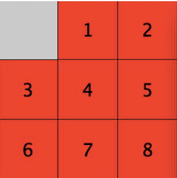
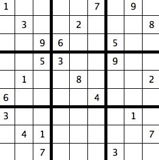
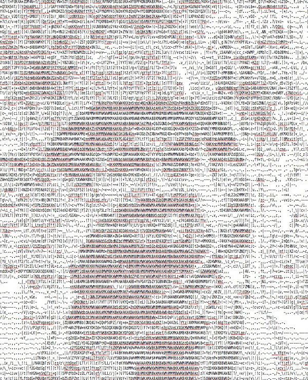
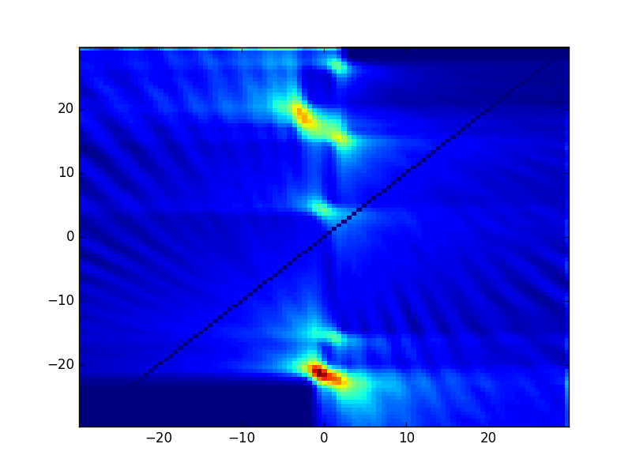
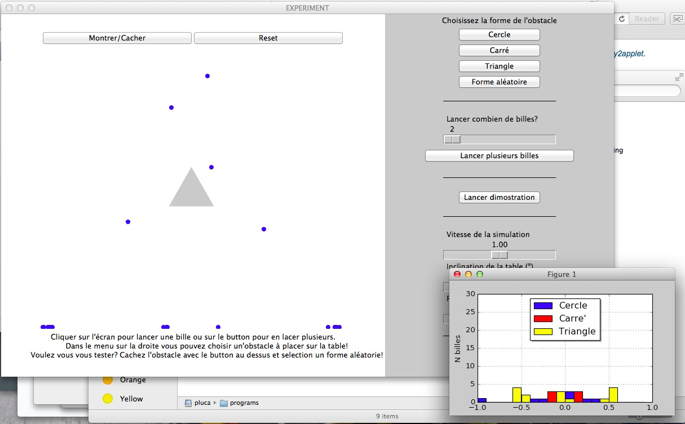

Algorithms and games
I'm a programmer and I have fun programming. So here are a few of the little programs I developed. All you'll find here is programmed in python. Have fun!
Sliding puzzle

Here is a sliding puzzle game. With automatic solver!
The graphics is done with
TKinter
(as in all other programs).
I made this little program while learning the
A* search algorithm.
In fact to solve the puzzle the program goes to a tree of possible moves
searching for the winning branch. Checking all possible branches
can be extremely computationally expensive. The A* algorithm boosts the search in the following way:
- Book-keeping: if a move was already expanded do not expand it again;
- Guided search: we can evaluate the distance to the goal and expand nodes with a smaller distance first.
For example one can use the number of misplaced tiles as an estimate.
In this case a Manhattan distance heuristic is used.
Note that the search is limited at 10000 iterations (takes about 10-15 seconds on my Mac). It successfully solved boards with up to 31 moves to reach the goal. But in quite some situations more than ~30 moves are required. In that case it won't find a solution. You can try to help it a bit though putting at least the easy boxes in place! It will lower a lot the search space.
Download script Download Mac app
The script is light-weight
and can be run by python 8square.py
but you have to take care that all needed libraries are present.
Sudoku
I was at Moriond conference some time ago and there was a challenge: a sudoku to solve. It was a really really hard one! So I decided to practice my newly learned graphics skills to implement a sudoku with solving helper. The helper fills all numbers which have a defined unique value. It does this by going though each box and finding which numbers can go in a box. If only one can work the number is added. The algorithm simply continues looping over all boxes until no move is possible any more. This does not always solve the sudoku. Often it comes a moment were no box has a unique possibility. In that case you can try find a number or just fill one of the empty boxes at random and then try the solve button again! Never mind, if you go wrong you can always go back! And by the way: I did it! I soved it. In just 2 days starting from scratch. But I was beaten by a human solver.
Download script Download Mac app
The script is light-weight
and can be run by python sudoku.py
but you have to take care that all needed libraries are present.
ASCII art
This is simple but nice! I just wanted to lean how to display images in python and do stuff with their pixels. And here you go! The script here described transforms .png and .jpg in ASCII art in the following way:
- Used TKinter to let you browse images and open them
- Uses PIL to resize the image to a 160x160 square and make it black and white
- Loops over the pixels and extracts their luminosity
- I defined 7 luminosity bands which are associated to "emptier" to "fuller" ASCII characters
And the game is done. The script will produce a {figure-name}.txt file that will contain your image converted into ASCII art!
Download script Download Mac app
The script is light-weight and can be
run by python img_to_ascii.py
but you have to take care that all needed libraries are present. In particular you'll need PIL or Pillow.
On Mac do "pip install pillow".
Machine learning
In my work as a PhD in physics I did a lot of data analysis and we used many machine learning tools such as Neural Networks and Boosted Decision Trees. but I was really bugged by the fact that they were just black boxes to me. So I decided to build a BDT! This program let't you load sets of points some categorised as "signal" and "background". Then it uses a BDT to find the best separation between them. A neural network is also on the way but not ready yet so don't push the "Neural Net" button!! Before going to the facts I must acknowledge who taught me about machine learning which is this course from the MIT OpenCourseWare.
The script is
light-weight and can be run by uncompressing the folder and python machine_learning.py.
Leave it in the same folder. You have to take care that all needed libraries are present
but it should work as is on most macs or linux machines.
Tracking
In high energy physics experiments we are all about tracking. Particles are very little and not visible by eye. But when they traverse silicon they leave bunches of free electrons behing which can be detected. So what we actually see is a series of "hits" in various silicon layers which we have to put together to reconstruct the track of the particle and from that it's properties. This little program defines a geometri of 20 layers and you can produce hits. You can decide how many track to have in the same event and you can add noise. Finally pushing "Analyse" an algorithm is run that identifies tracks. You can find details about how it works here. The basic idea is to make a grid of all possible track parameters and weight them depending on how close those tracks would be to the hits we have. This produced peaks in the reatina which can be used to identify tracks. This is not a software-level efficient algorithm but it is very simple and can he implemented in hardware.
The script is
light-weight and can be run by uncompressing the folder and python tracking.py.
Leave it in the same folder. You have to take care that all needed libraries are present.
In particular you need PIL or Pillow and matplotlib.
Playing the Rutherford experiment
For the EPFL open day I was asked to make a little program to explain the Rutherford experiment to kids. This experiment is about the structure of the atom. Physicists believed that the atom was a uniformly filled sphere and Rutherford wanted to test this hypothesis. He threw alpha particles at gold atoms and found that some would go though while others would rebound. This can be explained by a structure made by a hard nucleus at the middle and mostly empty space outside: the planetary model of the atom was born! The program simulates the experiment by throwing marbles at shapes of different form. Can you spot which shape it is from the distribution of the positions where the marbles fall? Have a try! The game is also available in 4 languages!
The script is
light-weight and can be run by uncompressing the .tar and then python experiment.py.
Leave it in the same folder. You have to take care that all needed libraries are present.
In particular you need TKinter and matplotlib 1.5 or higher.